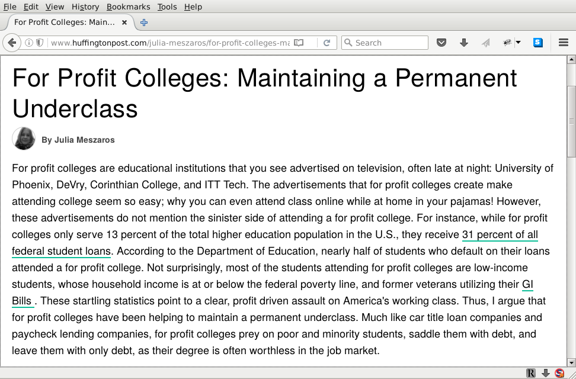
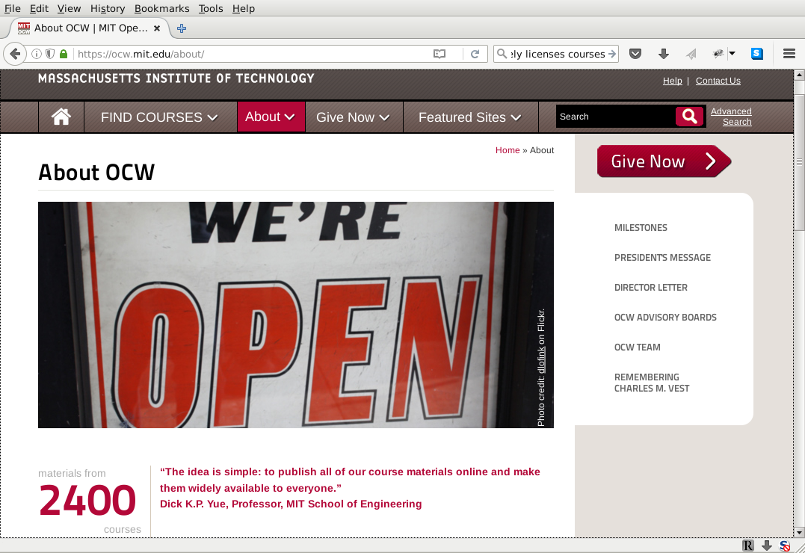

Copyleft.org
The Definitive Guide for Copyleft Education and Compliance
Bradley M. Kuhn
Open Source Summit 2017
Wednesday 13 September 2017
Follow along with the slides: ebb.org/oss2017/
My slides aren't on sched.org with the others because uploading them required agreeing to a proprietary software license for the sched.org software
Why Talk About Copyleft?
So…Conservancy has many activities…very few of which are licensing work…
…but people love hearing about copyleft most of all.
…& this is the talk Jono wanted. ☺
What Is Copyleft?
Copyleft is a strategy of utilizing copyright law to pursue the policy goal of fostering & encouraging the equal & inalienable right to copy, share, modify & improve creative works of authorship. Copyleft … describes any method that utilizes the copyright system to achieve the aforementioned goal. Copyleft as a concept is usually implemented in the details of a specific copyright license … Copyright holders of creative work can unilaterally implement these licenses for their own works to build communities that collaboratively share & improve those copylefted creative works.— Definition of copyleft from copyleft.org
Why Is Copyleft Complicated?
Copyleft licenses are admittedly longer…… and more complicated.
Because they have a job to do.
In the Early Days
In the early days, companies avoided copyleft and rewrote such software from scratch.
The Glib Answer
When I first got involved with copyleft in 1997, when asked about how to comply with copyleft licenses, I gave a glib answer:
If you can't figure out how to comply, don't use copylefted software; write your own instead.
Adoption vs. Software Freedom
Copyleft is always a trade-off between adoption and software freedom.
Education about Copyleft's Value
If we want copyleft adopted, education about it is essential.
So, I started teaching courses on copyleft in 2002.
The Compliance Industrial Complex
Between GCC, Linux, Glibc, Bash and a few other packages…
… it became obvious that companies would seek to adopt copylefted software…
… and the charities like Conservancy & FSF that understood copyleft would not necessarily be the only places to offer educational resources.
The Compliance Industrial Complex
In 2004, Black Duck attempted to hire me away from my (then) employer, FSF.
The Compliance Industrial Complex
Black Duck offered me the position of “Director of Marketing”.
The Compliance Industrial Complex
It was then I realized that I personally would be used, whether willingly or not, as a boogeyman to fear monger among confused copyleft adopters.
I got into software to make people's lives better, not to make them afraid of incorporating software.
The Compliance Industrial Complex
Dozens of entities now exist that provide proprietary tutorial material and software assistance with Open Source and Free Software license compliance.
Black Duck remains the most prominent, but even Linux Foundation offers proprietary courses and materials in compliance.
Many use so-called “freemium” models that offer some basic information freely, but the “good stuff” is proprietary and is licensing is expensive.
Irony of Proprietary Compliance Education
So, the software is Free as in Freedom…
… but to learn how to incorporate it into your company, you'll license proprietary software and take proprietary, NDA-covered training courses?
University of Phoenix
University of Phoenix
University of Phoenix is a for-profit “university”…
…it's only one step away from being Trump University…
…courses are proprietary; they trick students into taking loans to attend.
U. of Phoenix vs. MIT
MIT
MIT is admittedly expensive, but it's also a 501(c)(3) charity. They've freely licensed nearly all of their course material.
Is This In Spirit of Community?
FLOSS is filled with barriers to entry.
Those who do not freely license their training materials inherently increase barriers to entry & adoption.
It's frankly scandalous that proprietary FLOSS license compliance training materials exist at all.
The Copyleft Guide
125 pages, and growing, of the best content available on how to comply with copyleft licenses including:
- explanations of political motivations for copyleft.
- rationale texts from license drafters.
- commentary from key copyleft theorists and enforcers.
- the only source for detailed case studies of real compliance scenarios.
- evolves transparently & accepts criticism and improvement.
Copyleft.org: The Universal Recipient
Copyleft.org seeks to consolidate all freely licensed materials that teach about copyleft into one place.
Why I Must Write This Guide
I'm a trained computer scientist and software developer…
…but my skills there are more or less average …
…and my licensing knowledge is now at expert level …
…I believe anyone with knowledge has a moral obligation to share that knowledge freely with others.
Why This Must Be A Collaboration
All parties are biased about everything.
The only way to find truth is study all sides of an issue.
Any guide about a complex political reality that seeks to be neutral will fail.
Architect the community to welcome input, however it arrives.
Incorporating Secret Criticism
We've literally gotten feedback by rumor.
We were leaked a specific criticism regarding a specific section of the Guide from an industry lawyer conference call (to which we weren't invited).
We updated the Guide based on the feedback and emailed the criticizing lawyer.
We hope that you'll be more willing to give us direct feedback, of course.
Incorporating Third Party Materials
Some education projects purport they'll release materials for “everyone”.
Yet no project exists that is releasing everything; it's all subsets or “front-matter” to sell the “real stuff”
We nevertheless plan to incorporate anything released freely so copyleft.org is truly comprehensive.
Challenges of Collaboration on Tutorials
- Software development communities knows well how to collaborate on software:
- tools are (generally) standardized, and all experts have willingness to use them.
- How do we inspire contribution from experts whose primary experience is in Microsoft Word?
- We bikeshed LaTeX vs. Markdown, but is that even likely to change things.
In Other Words
Is it even worth switching formats if most experts have other (non-free) agendas?
Experts Favoring Proprietary Models
Nearly every expert in the field of copyleft compliance who doesn't work for FSF or Conservancy has a for-profit business selling their expertise.
Of course the Copyleft Guide incorporated the “freemium releases”.
Experts Favoring Proprietary Models
But we'll have to forever compete with those who wish to want to get rich from building pay-walls to access knowledge.
The irony is enough to make one wonder if people are really serious about what they claim of support for “Open Source”.
Our only option: develop copylefted material that's good, promote it, and encourage community around its development.
A Few Future Plans
Here are a few of the plans we have for Copyleft.org:
Action Item 1
Each major section will have a “Commentary” section, which is designed to include opinions on unsettled issues. (The main body of the section will seek to include only undisputed conclusions.)Action Item 2
Switch to Markdown, in hopes for more contribution.
Action Item 3
case studies.
Action Item 4
Continue advocacy to ask the many entities releasing proprietary materials to liberate them.
Action Item 5
Actively listen to your ideas here in the room today.
More Info / Talk License

URLs / Social Networking / Email:
- Pls. support Conservancy
- The Copyleft Guide is available & welcomes contributions at copyleft.org
- You can join the GPL enforcement coalition of Linux developers.
- Conservancy: sfconservancy.org & @conservancy.
Presentation and slides are: Copyright © 2015, 2016, 2017 Bradley M. Kuhn, and are licensed under the Creative Commons Attribution-Share Alike 4.0 International License.